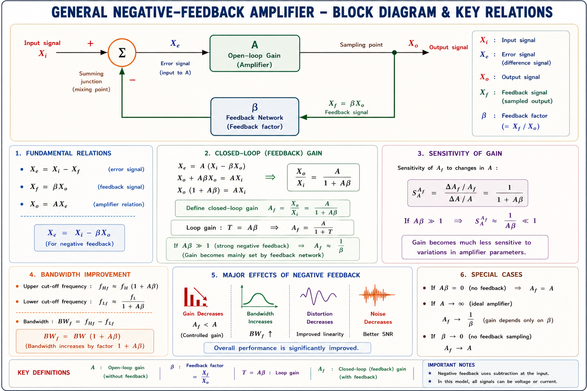
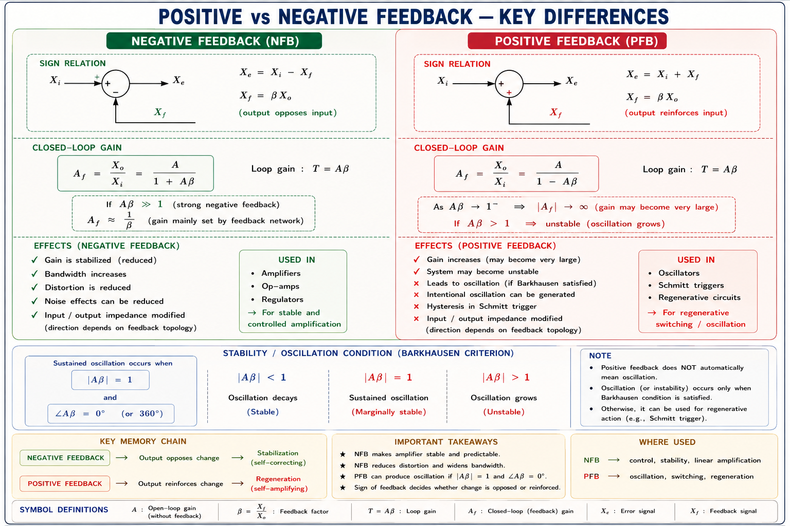
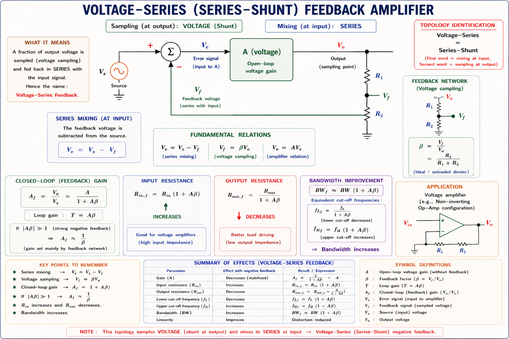
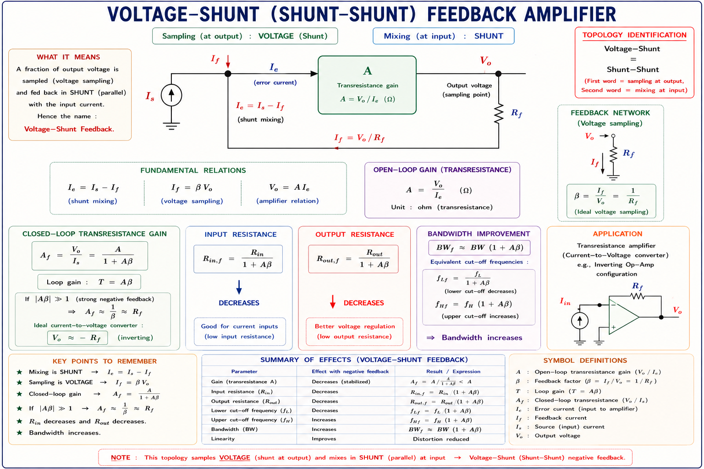
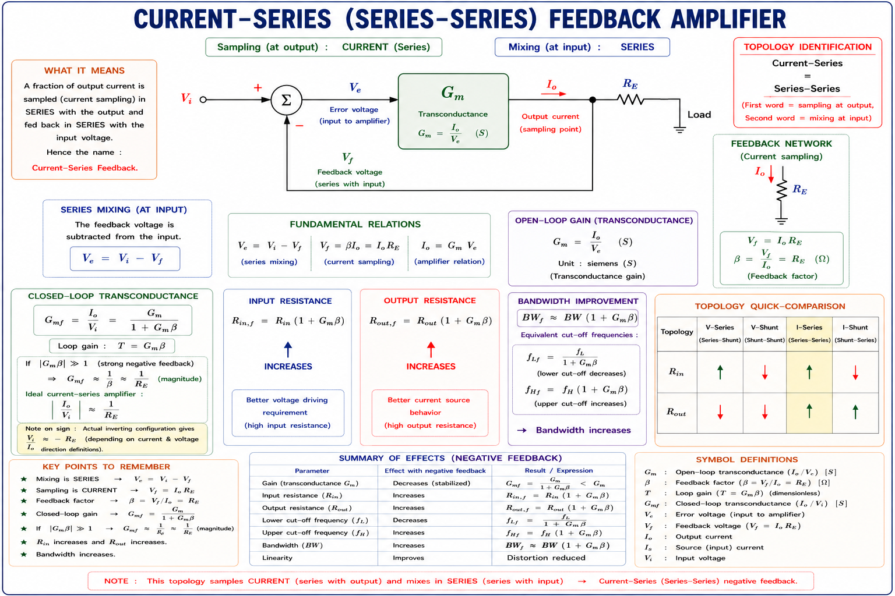
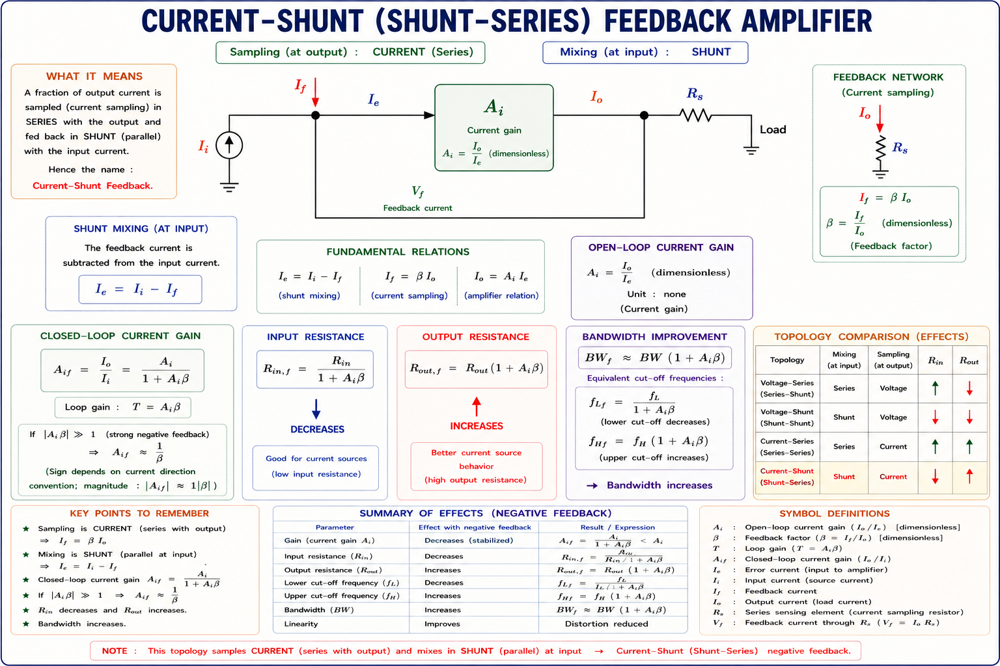
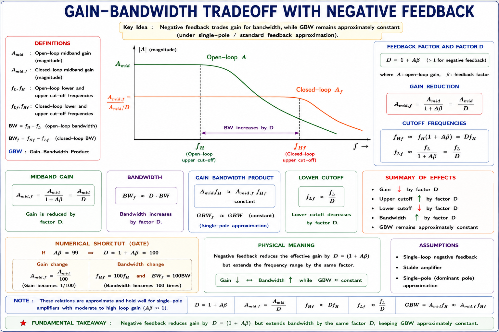

Negative and positive feedback, all four topologies (voltage-series, voltage-shunt, current-series, current-shunt), effects on gain, bandwidth, input/output impedance, noise, distortion and stability — with complete derivations, SVG circuit diagrams, and GATE/IES solved examples.
Imagine you are driving a car. Without looking at the road (no feedback), the car drifts off course. You instinctively look at the road, compare your actual path to the desired path, and correct your steering. This is feedback in everyday life — and it is exactly the mechanism used in amplifier circuits to dramatically improve their behaviour.
An amplifier built from transistors suffers from several practical problems: its gain varies with temperature, supply voltage, and transistor replacement; it introduces noise; it produces non-linear distortion; and its useful frequency range (bandwidth) is limited. Feedback — specifically negative feedback — is the engineering tool that tames all these problems simultaneously.
Transistor parameters (like \(\beta\)) vary ±50% with temperature. Without feedback, a gain of 1000 could swing between 500 and 1500. With negative feedback, the same circuit delivers a gain stable to within ±2%. This is the fundamental reason feedback amplifiers dominate all precision analog design.
Any feedback amplifier, regardless of its topology, can be described by a four-block model. Understanding this model is the key to analysing every feedback circuit in GATE and IES examinations.

Let \(A\) be the open-loop gain and \(\beta\) be the feedback factor. The error signal is \(X_e = X_i - X_f\) (for negative feedback). The output is \(X_o = A \cdot X_e\). Substituting:
The term \((1 + A\beta)\) is called the loop gain or desensitivity factor. It appears in every formula describing how feedback modifies amplifier properties.
When the loop gain \(A\beta \gg 1\), the closed-loop gain \(A_f \approx 1/\beta\). The feedback network is typically made of precision resistors — stable, temperature-independent components. So the gain no longer depends on the transistor's \(\beta\) or \(g_m\), but only on resistor ratios. This is the fundamental power of negative feedback.
The sign of the feedback — whether the fed-back signal is subtracted from or added to the input — fundamentally changes the circuit's behaviour.

For sustained oscillation (positive feedback intentionally exploited): the loop gain magnitude must equal unity \(|A\beta| = 1\), and the total phase shift around the loop must be 0° (or 360°). This is the Barkhausen criterion. For stable amplifier operation (negative feedback), we need \(|A\beta| > 0\) and phase margin sufficient to prevent oscillation.
This is the most widely encountered topology. The feedback network samples the output voltage (shunt connection at output) and mixes the feedback signal in series with the input voltage. The classic non-inverting op-amp configuration is a textbook example.

The series connection at the input increases the effective input impedance (the feedback signal opposes current draw from the source). The shunt connection at the output decreases the output impedance (the amplifier more firmly controls the output voltage).
"Series at input → Rᵢ × D" and "Shunt at output → Ro ÷ D" where \(D = (1 + A\beta)\). Series connection at any port multiplies the impedance at that port by D; shunt connection divides it by D. This single rule covers all four topologies.
Here the feedback network samples the output voltage (shunt at output) and feeds back a current in parallel (shunt) with the input current. This topology is used wherever a high-gain transresistance (voltage output from current input) amplifier is needed. The classic inverting op-amp configuration uses shunt-shunt feedback.

Both input and output impedances are reduced. This makes the circuit ideal for a current-to-voltage converter (transimpedance amplifier) — a low input impedance accepts the input current readily, and low output impedance drives loads efficiently.
The feedback network samples the output current (series sensing resistor in the output path) and feeds back a voltage in series with the input. This topology increases both input and output impedance — ideal when you want a stable transconductance (voltage-in, current-out) amplifier.

The feedback network samples the output current (series connection at output) and injects a feedback current in shunt with the input current. This is a current amplifier configuration — the gain quantity is current gain \(A_I = I_o/I_i\).
Current mirrors in IC design use shunt-series feedback to improve current copying accuracy. The emitter-degeneration resistors in Wilson current mirror are a form of current-shunt feedback, dramatically increasing output impedance and thus improving current source behaviour.
| Topology | Samples | Mixes | Gain Type | Rᵢf | Rₒf | Ideal Amp |
|---|---|---|---|---|---|---|
| Voltage-Series (Series-Shunt) | Voltage | Series (V) | Voltage gain Av | ↑ Ri·D | ↓ Ro/D | Voltage amp |
| Voltage-Shunt (Shunt-Shunt) | Voltage | Shunt (I) | Transresistance AR | ↓ Ri/D | ↓ Ro/D | Transresistance |
| Current-Series (Series-Series) | Current | Series (V) | Transconductance Gm | ↑ Ri·D | ↑ Ro·D | Transconductance |
| Current-Shunt (Shunt-Series) | Current | Shunt (I) | Current gain AI | ↓ Ri/D | ↑ Ro·D | Current amp |
\(D = 1 + A\beta\) = Desensitivity factor | ↑ increases | ↓ decreases
Negative feedback reduces the closed-loop gain by a factor of \(D = (1 + A\beta)\). But it simultaneously makes the gain much more stable. The sensitivity of closed-loop gain to changes in open-loop gain is reduced by the same factor D:
If open-loop gain changes by 20% (due to temperature, ageing), the closed-loop gain changes by only 20%/(1 + \(A\beta\)). With \(A\beta\) = 100, a 20% change in A produces only a 0.2% change in A_f.
This is one of the most elegant results in feedback theory: negative feedback extends bandwidth by the same factor D by which it reduces gain, keeping the gain-bandwidth product constant.

Students often think feedback improves gain AND bandwidth simultaneously. It does NOT. It trades gain for bandwidth, keeping their product fixed. A 741 op-amp with open-loop gain of 200,000 and BW of 5 Hz has GBW = 1 MHz. Connected as a unity-gain buffer (\(A_f = 1\)), BW becomes 1 MHz. The gain drops 200,000×, bandwidth rises 200,000×.
Negative feedback reduces non-linear distortion introduced by the amplifier itself. If the amplifier generates distortion voltage \(V_d\) internally (after the input mixing junction), the distortion at the output is reduced by the desensitivity factor D:
Negative feedback reduces distortion and noise generated within the amplifier (after the summing junction). It does not improve the signal-to-noise ratio for noise that is present at the input along with the signal — because both signal and input noise are amplified equally. This is a frequently tested GATE concept.
While negative feedback is beneficial, an amplifier with multiple poles can become unstable if phase shift accumulates to 180° at the frequency where |\(A\beta\)| = 1. At that point, negative feedback becomes positive feedback, and the circuit oscillates.

Intuitive answer: The feedback voltage \(V_f\) opposes the input voltage \(V_i\). So from the source's perspective, less current flows for the same applied voltage — this means the circuit "looks like" a higher impedance. Mathematically, \(V_i = V_e + V_f = I_i R_i + \beta A I_i R_i = I_i R_i(1 + A\beta)\), so \(R_{if} = V_i/I_i = R_i(1+A\beta)\).
When \(A\beta \to \infty\), \(A_f \to 1/\beta\). This is the ideal op-amp model: infinite open-loop gain makes the closed-loop gain depend purely on the feedback resistor ratio, independent of the amplifier itself. This is why op-amp circuits are designed with large A and precision external resistors for \(\beta\).
If \(\beta = 0\) (no feedback), then \(A_f = A/(1+0) = A\). The circuit reverts to the open-loop amplifier. All the benefits of feedback — stability, extended bandwidth, reduced distortion — are lost. This is what happens when the feedback resistor is open-circuited.
The amplifier with feedback "senses" the output voltage and actively corrects it. If a load is connected and tries to pull the output down, the feedback increases the drive to oppose this. The amplifier behaves as a voltage source with lower internal resistance. Mathematically, \(R_{of} = R_o/(1+A\beta)\).
Given: \(A = 10000\), \(\beta = 0.01\)
(a) Closed-loop gain:
Note: \(1/\beta = 1/0.01 = 100\). Since \(A\beta = 100 \gg 1\), \(A_f \approx 1/\beta = 100\) ✓
(b) If A changes by +10%: New A = 11,000
Change in \(A_f = 99.10 - 99.01 = 0.09\). Percentage change = \(0.09/99.01 \times 100 = \mathbf{0.09\%}\)
A 10% change in A produced only 0.09% change in A_f — a 110× improvement in stability (= desensitivity factor D = 101 ≈ 110). This is the stabilising power of negative feedback.
Step 1: Compute desensitivity D:
Step 2: New cutoff frequencies:
Step 3: New bandwidth:
Original BW ≈ 100 kHz. Feedback extended it ~11× (= D). New closed-loop gain = 500/11 = 45.5. GBW check: 500 × 100k = 50 MHz = 45.5 × 1.1M = 50 MHz ✓
Closed-loop gain: \(A_{vf} = 200/21 = 9.52\). This is ideal voltage amplifier behaviour — high input impedance, low output impedance, stable gain.
An amplifier with open-loop gain of 1000 and 3-dB bandwidth of 5 kHz is configured with a negative feedback factor \(\beta\) = 0.1. The closed-loop bandwidth is:
\(D = 1 + 1000 \times 0.1 = 101\). \(BW_f = 5000 \times 101 = 505\text{ kHz}\). Note: closed-loop gain \(= 1000/101 \approx 9.9\). GBW = 5M = 9.9 × 505k ≈ 5M ✓
In a feedback amplifier, the feedback network samples the output voltage and the feedback signal is applied in series with the input. Which of the following is correct regarding the effect on input and output resistances?
Output voltage sampled → shunt at output → Ro decreases. Feedback mixed in series at input → Ri increases. This is the voltage-series (series-shunt) topology.
An amplifier has open-loop gain A = 200 ± 20% (due to temperature). After applying negative feedback with \(\beta\) = 0.05, the percentage variation in closed-loop gain is approximately:
\(D = 1 + A\beta = 1 + 200 \times 0.05 = 11\). Percentage variation in \(A_f\) = 20%/D = 20%/11 ≈ 1.82% ≈ ±1.8%.
An amplifier introduces 10% harmonic distortion. Negative feedback with loop gain \(A\beta\) = 49 is applied. The distortion at the output with feedback is:
\(D = 1 + A\beta = 1 + 49 = 50\). Distortion with feedback = 10%/50 = 0.2%.
In feedback analysis, \(\beta\) is the feedback network's transfer function, not the BJT current gain \(\beta = h_{FE}\). GATE questions sometimes exploit this notation overlap. In feedback problems, \(\beta\) is always a fraction of the output returned to the input.
Feedback does NOT create bandwidth from nothing. The gain-bandwidth product is fixed by the amplifier's internal frequency compensation. Feedback trades gain for bandwidth. If you add feedback and gain goes down by D, bandwidth goes up by D — not by magic, but by conservation of GBW.
Always ask two separate questions: (1) How is the output sampled? — Shunt sampling ↓ Ro; Series sampling ↑ Ro. (2) How is feedback mixed at input? — Series mixing ↑ Ri; Shunt mixing ↓ Ri. Never mix up the sampling and mixing ports.
Negative feedback does NOT improve Signal-to-Noise ratio for noise present at the input. Both signal and noise are fed back equally. Feedback only reduces noise and distortion generated inside the amplifier (after the summing junction).
Negative feedback at DC can turn into positive feedback at high frequencies if phase shift accumulates to 180°. An amplifier with insufficient phase margin will oscillate even though it is "designed" with negative feedback. Always check phase margin.
Type a question about any feedback concept and get an instant explanation.
\(A_f = \dfrac{A}{1+A\beta}\) · \(D = 1+A\beta\) · For \(A\beta\gg1\): \(A_f \approx 1/\beta\)
Gain ÷ D · BW × D · GBW = constant · \(f_{Hf} = f_H \cdot D\)
Series port: impedance × D · Shunt port: impedance ÷ D · Valid at both input and output
Amplifier-generated distortion ÷ D · Input noise: unaffected · SNR at input: same
Phase margin = 180° + ∠\(A\beta\) at gain crossover · Stable if PM > 45° · Ideal: PM = 60°
V-Series: ↑Ri ↓Ro · V-Shunt: ↓Ri ↓Ro · I-Series: ↑Ri ↑Ro · I-Shunt: ↓Ri ↑Ro
Series at input → Increases Rᵢ |
Shunt at input → decreases Rᵢ
Shunt at output → decreases Rₒ | Series at output
→ Increases Rₒ
S for Series always goes with Increase for impedance; Shunt goes with the opposite port's
rule.
| Topic | GATE Probability | IES Probability | Must-Know Formula |
|---|---|---|---|
| Closed-loop gain formula | 🟢 Very High | 🟢 Very High | \(A_f = A/(1+A\beta)\) |
| Voltage-Series topology & impedances | 🟢 High | 🟢 High | \(R_{if}=R_i D,\; R_{of}=R_o/D\) |
| Bandwidth with feedback | 🟢 High | 🟡 Medium | \(BW_f = BW \cdot D\) |
| Distortion reduction | 🟡 Medium | 🟡 Medium | \(D_f = D/D\) |
| Topology identification | 🟢 High | 🟢 High | Sampling + Mixing ports |
| Phase margin / stability | 🟡 Medium | 🟡 Medium | PM = 180° + ∠\(A\beta\) |
| Current-series / current-shunt | 🔴 Low–Med | 🟡 Medium | \(G_{mf} = G_m/(1+G_m R_e)\) |